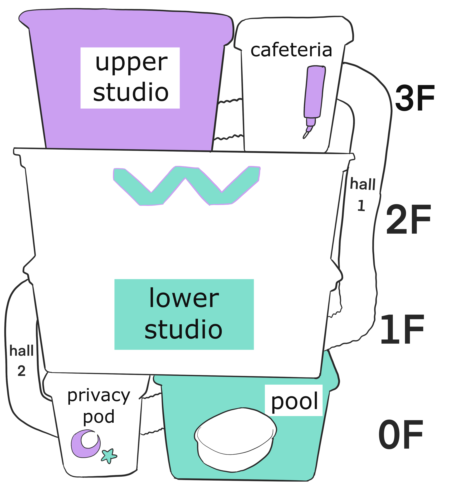

Wistar Artists' Colony is a cutting-edge concept in the realm of artists' fellowships. Located in a beautiful apartment in Columbus, Ohio, Wistar Artists' Colony operates in a state-of-the-art, four-story art studio. The Colony is kept fully stocked with necessities and artmaking materials; the artists are entirely provided for by the generosity of donors and the Wistar Executive Board. Our artists enjoy several luxurious amenities while in residence. A gourmet cafeteria and swimming pool are always available to residents. During their down time, our artists can be found resting in the privacy room, or on one of many plush hammocks. Artists partnered with us also enjoy excursions to the surrounding apartment, where they can dash across the plush carpet and leap about the furniture. Artists participating in the Wistar colony agree to be constantly available to be viewed by anyone who wishes to see them; a live video feed is available for public viewing at all hours. Wistar Artists' Colony operates on a strictly communal basis. While one artist may spearhead the concept of a particular work, each collaborator has an equal ability to participate and shape the artwork to their own will. What is formed from these collaborations and conflicts is the core of our creative process. The Colony currently accepts a maximum of six Rattus species artists. We are not currently accepting applications for artists of Homo species due to size contraints.
To promote radical unity through living, learning, and artmaking. To blur the traditional barriers of species roles. To amplify the voices of the unsung, marginalized, and vilified. To unashamedly push the boundaries of social propriety. To be transparent in intention and practice to our audience in every aspect possible.
